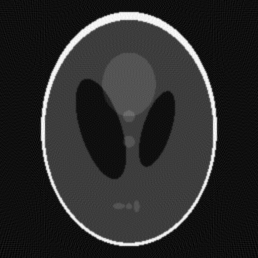

Lab 2
W celu sprawdzenia właściwości i możliwości transformaty Radona przetestowano wyniki rekonstrukcji obrazu z projekcji o różnej liczbie kątów, a także po zastosowaniu różnej filtracji.
| Phantom - oryginał |
{kind=link}
Pierwszym nasuwającym się pytaniem było jak mocno liczba projekcji wpływa na jakość obrazu. W tym celu stworzono 4 obrazy: - złożenie 180 projekcji, dθ = 1°; - złożenie 18 projekcji, dθ = 10°; - złożenie 4 projekcji, dθ = 45°; - złożenie 2 projekcji, dθ = 90°. Kąty projekcji zmieniały się liniowo. Mniejsza liczba projekcji niosła ze sobą pogorszenie jakości zdjęcia, do tego stopnia, że przy liczbie projekcji poniżej kilkunastu tracony jest zarys obiektu na obrazie. Tak naprawdę zależy to w dużej mierze od kształtu obiektu - kwadrat lub prostokąt zostanie już w pewnym zakresie odtworzony przy dwóch projekcjach. Rzutowanie na oś OX i prostopadłą OY wystarcza, żeby je rozpoznać. Jednocześnie, co jest widoczne w tym przypadku, odtwarzanie elpisy z projekcji na dwie prostopadłe osie w efekcie da prostokąt. Skrajnym przypadkiem jest koło, którego dokładne odtworzenie wymaga nieskończonej ilości projekcji w pełnym zakresie kątów - w przeciwnym razie widoczny będzie wielokąt. W praktyce tak duża liczba projekcji nie jest konieczna i zmiana kąta o 1 stopień, czyli 180 projekcji daje satysfakcjonujące efekty.
| Projekcja co 1° | 180 projekcji | Projekcja co 10° | 18 projekcji |
| Projekcja co 45° | 4 projekcje | Projekcja co 90° | 2 projekcje |
{kind=link}
{kind=link}
{kind=link}
{kind=link}
Kolejnym interesującym aspektem jest filtrowanie wyników rekonstrukcji. Jak widać w poniższej tabeli obraz nie poddany filtracji jest mocno niewyraźny co wynika z nadreprezentacji niskich częstotliwości po przeprowadzeniu transformacji Radona. W tym celu należy zastosować filtr górnoprzepustowy - przepuszczający wysokie częstotliwości. Takim filtrem jest Ram-Lak, który blokuje niskie częstotliwości, przepuszcza wysokie i liniowo traktuje częstotliwości w środku pasma. Filtr ten jest nieoceniony przy rekonstrukcji projekcji, aczkolwiek jego zastosowanie ma niepożądany efekt wzmacniania dodatkowego szumu obecnego w projekcjach. Aby zgłagodzić ten efekt stosuje się szereg zmodyfikowanych filtrów: - Shepp-Logan - filtr Ram-Lak przemnożony przez funkcję sinc, - Cosine - filtr Ram-Lak przemnożony przez funkcję cos, - Hamming - filtr Ram-Lak przemnożony przez okno Hamminga, - Hann - filtr Ram-Lak przemnożony przez okno Hanna. Ponieważ operowaliśmy na projekcjach pozbawionych szumu efekty powyższych filtrów są niemal identyczne.
 Brak filtru
Brak filtru
|
 Ram-Lak | Shepp-Logan |
| Cosine | Hamming | Hann |
{kind=link}
{kind=link}
{kind=link}
{kind=link}
{kind=link}
Kolejnym celem jest dokładna analiza powyższych czynników poprzez przedstawienie zależności jakości obrazu wynikowego od liczby projekcji i rodzaju filtrów na wykresach. W tym celu zastosowane będą różne miary typu SNR, MSE itp.